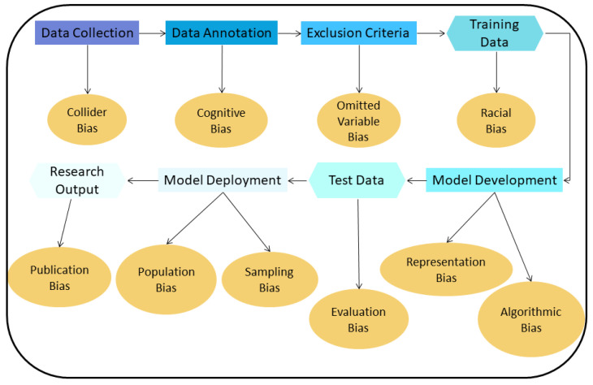

Technology Risks
Overdiagnosis
Overdiagnosis represents a significant concern in cancer care (Viviana
et al., 2025), and with the introduction of AI-based screening
technologies, it may potentially further increase the risk.
According to Patz et al. (2013), a trial involving 53,452 high-risk
individuals for lung cancer over a 6.4-year observation period to
estimate overdiagnosis numbers between low-dose computed tomography
(LDCT) and chest radiography (CXR), estimated that 18.5% of all lung
cancer types detected by LDCT were overdiagnosis. Furthermore, Chao et
al. (2022) found that AI algorithm-assisted CT screening increased the
overall sensitivity from 67.7% to 88.4% when compared to LDCT. Given
that overdiagnosis is already an existing issue in LDCT screening, and
AI-assisted screening displays a higher sensitivity, there is a
potential that AI-based screening could further escalate the risk of
overdiagnosis.
However, there is currently no evidence linking AI screening to
overdiagnosis. Additionally, Du et al. (2022) claims that when compared
to physicians, AI had 4.12% better accuracy, 4.68% better sensitivity,
equal specificality, 4.68% better Youden index, an increased kappa by
0.104, a significantly shorter detection time, but a 0.023 decrease in
area under the curve (AUC). Given equal specificity, it would suggest
that there would not be an increase in overdiagnosis due to false
positives, although the increased sensitivity could increase in number
of indolent tumours detected, resulting in overdiagnosis.
Wider Heath Inequalities
The adoption of AI screening carries the potential to increase existing
health inequalities. According to Du et al. (2023), it was concluded
that to break even on the one-time investment of 51,616 euros on their
deep learning computer-aided diagnosis (DL-CAD), a volume of 12,300 to
53,600 CT scans would be required for concurrent reading while
pre-screening reading would require 9,400 to 65,000 scans, across the
USA, UK, and Poland.
Additionally, to break even, the author mentioned that their investment
in the DL-CAD software would need to be used in high-volume settings or
in a pay-per-case setting that would need to cost significantly lower
than 6 euros (Du et al., 2023), which may not be achievable for a
lower-income or underdeveloped healthcare system due to lower patient
volume and a smaller budget.
In addition, a frequent problem is that the necessary infrastructure and
personnel are overlooked when implementing the AI technologies (Istasy
et al., 2022). There are also unforeseen issues with implementation,
such as the cost of maintenance, the need for trained personnel to
operate the AI technology, and widespread internet access (Istasy et
al., 2022), which lower-income healthcare systems may not be able to
afford, thereby contributing to the widening of health inequalities.
However, according to Tu et al. (2025), the stacking model outperformed
the multivariate regression model, achieving a 3% improvement in the
area under the curve (AUC), which could suggest that the implementation
of AI-based screening may have a positive impact on patients, and in
certain contexts, could outweigh the associated risks.
Bias
AI screening comes with the potential risk of bias, which may contribute
to overdiagnosis.
According to Leonard et al. (2023), AI-based models exhibited an 83%
high bias rate, whereas the traditional regression model had a 66% high
bias rate.
Additionally, bias is not restricted to just the training phase, but rather, there are multiple different phases in model development and evaluation where bias can occur, and with each phase containing multiple types of bias (Sourlos et al., 2022).

Due to this bias, underrepresented groups may face an increased risk of
false-positive results, leading to overdiagnosis. According to Toft et
al. (2019), overdiagnosis in colorectal cancer (CRC) screening resulted
in anxiety, discomfort, changed self-perception and behaviour, and
reconsiderations on screening participation. Similar consequences may
occur with patients who received an overdiagnosis of lung cancer, which
may negatively impact the patient’s standard of living.
Conversely, findings reported by Thong et al. (2022) found that AI
showed high accuracy in detecting lung cancer, additionally, it was
found to be accurate across a variety of different imaging datasets and
collection contexts. Although it was acknowledged that the data quality
was poor (Thong et al., 2022), indicating that there may not have been
enough testing.
Made 7 June 2025
by Meredith Zhong, Daniel Hawke, & Liam David Hackney Smith.